pacman::p_load(sf, tidyverse, sfdep, tmap, spacetime, dplyr, lubridate, spdep, plotly)Take Home Exercise 2
Objectives
To discover:
if the key indicators of tourism economy of Thailand are independent from space and space and time.
If the tourism economy is indeed spatial and spatio-temporal dependent, then, you would like to detect where are the clusters and outliers, and the emerging hot spot/cold spot areas.
The Task
The specific tasks of this take-home exercise are as follows:
Using appropriate function of sf and tidyverse, preparing the following geospatial data layer:
a study area layer in sf polygon features. It must be at province level (including Bangkok) of Thailand.
a tourism economy indicators layer within the study area in sf polygon features.
a derived tourism economy indicator layer in spacetime s3 class of sfdep. Keep the time series at month and year levels.
Using the extracted data, perform global spatial autocorrelation analysis by using sfdep methods.
Using the extracted data, perform local spatial autocorrelation analysis by using sfdep methods.
Using the extracted data, perform emerging hotspot analysis by using sfdep methods.
Describe the spatial patterns revealed by the analysis above.
Getting Started
Required Libraries
Loading the datasets
tourism_data <- read_csv("data/rawdata/thailand_domestic_tourism_2019_2023_ver2.csv")admin_boundaries <- st_read(dsn = "data/rawdata/",
layer = "tha_admbnda_adm1_rtsd_20220121")Reading layer `tha_admbnda_adm1_rtsd_20220121' from data source
`C:\Users\User\OneDrive - Singapore Management University\Semester 4\ISSS626-G1 Geo Spatial Analytics and Applications\jylau91\ISSS626-GAA\Take-home_Ex\Take-home_Ex02\data\rawdata'
using driver `ESRI Shapefile'
Simple feature collection with 77 features and 16 fields
Geometry type: MULTIPOLYGON
Dimension: XY
Bounding box: xmin: 97.34336 ymin: 5.613038 xmax: 105.637 ymax: 20.46507
Geodetic CRS: WGS 84Selecting the required columns for analysis from admin boundaries and removing excess spaces in provinces to prepare dataframe for leftjoin with tourism dataset.
admin_boundaries <- admin_boundaries %>%
mutate(ADM1_EN = str_trim(ADM1_EN)) %>%
select(Shape_Leng, Shape_Area, ADM1_EN, ADM1_PCODE, geometry)head(admin_boundaries)Simple feature collection with 6 features and 4 fields
Geometry type: MULTIPOLYGON
Dimension: XY
Bounding box: xmin: 100.1913 ymin: 13.47842 xmax: 100.9639 ymax: 14.80246
Geodetic CRS: WGS 84
Shape_Leng Shape_Area ADM1_EN ADM1_PCODE
1 2.417227 0.13133873 Bangkok TH10
2 1.695100 0.07926199 Samut Prakan TH11
3 1.251111 0.05323766 Nonthaburi TH12
4 1.884945 0.12698345 Pathum Thani TH13
5 3.041716 0.21393797 Phra Nakhon Si Ayutthaya TH14
6 1.739908 0.07920961 Ang Thong TH15
geometry
1 MULTIPOLYGON (((100.6139 13...
2 MULTIPOLYGON (((100.7306 13...
3 MULTIPOLYGON (((100.3415 14...
4 MULTIPOLYGON (((100.8916 14...
5 MULTIPOLYGON (((100.5131 14...
6 MULTIPOLYGON (((100.3332 14...Cleaning the tourism dataset:
Uniform date format
Remove excess spaces from province names
Replacing provinces that do not match boundary admin province naming convention for the few provinces noted below:
Tourism Dataset Admin Boundary Dataset Lopburi Lop Buri Chainat Chai Nat Chonburi Chon Buri Prachinburi Prachin Buri Phang Nga Phangnga Buriram Buri Ram Sisaket Si Sa Ket Nong Bua Lamphu Nong Bua Lam Phu Selecting required variables from dataset
tourism_data <- tourism_data %>%
mutate(date = as.Date(date,format = "%Y-%m-%d")) %>%
mutate(province_eng = str_trim(province_eng)) %>%
mutate(province_eng = case_when(
province_eng == "Lopburi" ~ "Lop Buri",
province_eng == "Chainat" ~ "Chai Nat",
province_eng == "Chonburi" ~ "Chon Buri",
province_eng == "Prachinburi" ~ "Prachin Buri",
province_eng == "Phang Nga" ~ "Phangnga",
province_eng == "Buriram" ~ "Buri Ram",
province_eng == "Sisaket" ~ "Si Sa Ket",
province_eng == "Nong Bua Lamphu" ~ "Nong Bua Lam Phu",
TRUE ~ province_eng # Keep the rest unchanged
)) %>%
select(date, province_eng, region_eng, variable, value)Fixing known errors in tourism dataset
From the datasource (Kaggle), a discussion highlighted the region data for Sisaket province is incorrect as it should be east_northeast, but was labelled as south in the dataset. Upon googling/maps and review of the data table, it was verified that this is true.
We will use the following code chunk to correct it.
tourism_data[tourism_data$province_eng == "Si Sa Ket",]["region_eng"] <- "east_northeast"head(tourism_data)# A tibble: 6 × 5
date province_eng region_eng variable value
<date> <chr> <chr> <chr> <dbl>
1 2019-01-01 Bangkok central ratio_tourist_stay 93.4
2 2019-01-01 Lop Buri central ratio_tourist_stay 61.3
3 2019-01-01 Phra Nakhon Si Ayutthaya central ratio_tourist_stay 73.4
4 2019-01-01 Saraburi central ratio_tourist_stay 67.3
5 2019-01-01 Chai Nat central ratio_tourist_stay 79.3
6 2019-01-01 Nakhon Pathom central ratio_tourist_stay 71.7Joining the datasets
tourism_sf <- admin_boundaries %>%
left_join(tourism_data, by = c(ADM1_EN = "province_eng"))head(tourism_sf)Simple feature collection with 6 features and 8 fields
Geometry type: MULTIPOLYGON
Dimension: XY
Bounding box: xmin: 100.3279 ymin: 13.49339 xmax: 100.9385 ymax: 13.9552
Geodetic CRS: WGS 84
Shape_Leng Shape_Area ADM1_EN ADM1_PCODE date region_eng
1 2.417227 0.1313387 Bangkok TH10 2019-01-01 central
2 2.417227 0.1313387 Bangkok TH10 2020-01-01 central
3 2.417227 0.1313387 Bangkok TH10 2021-01-01 central
4 2.417227 0.1313387 Bangkok TH10 2022-01-01 central
5 2.417227 0.1313387 Bangkok TH10 2023-01-01 central
6 2.417227 0.1313387 Bangkok TH10 2019-02-01 central
variable value geometry
1 ratio_tourist_stay 93.37 MULTIPOLYGON (((100.6139 13...
2 ratio_tourist_stay 89.36 MULTIPOLYGON (((100.6139 13...
3 ratio_tourist_stay 7.54 MULTIPOLYGON (((100.6139 13...
4 ratio_tourist_stay 26.34 MULTIPOLYGON (((100.6139 13...
5 ratio_tourist_stay 75.02 MULTIPOLYGON (((100.6139 13...
6 ratio_tourist_stay 89.19 MULTIPOLYGON (((100.6139 13...We have now created the study area layer in sf at the province level of Thailand.
To ease further analysis, we would label the aggregate the dates by months and years, followed by a pivot of values under each tourism indicator using the following code chunk.
tourism_sf <- tourism_sf %>%
mutate(month = month(date),
year = year(date)) %>%
mutate(year_month = ym(paste(year, month, sep = "-")))
tourism_wide <- tourism_sf %>%
pivot_wider(names_from = variable, values_from = value)
head(tourism_wide)Simple feature collection with 6 features and 17 fields
Geometry type: MULTIPOLYGON
Dimension: XY
Bounding box: xmin: 100.3279 ymin: 13.49339 xmax: 100.9385 ymax: 13.9552
Geodetic CRS: WGS 84
# A tibble: 6 × 18
Shape_Leng Shape_Area ADM1_EN ADM1_PCODE date region_eng
<dbl> <dbl> <chr> <chr> <date> <chr>
1 2.42 0.131 Bangkok TH10 2019-01-01 central
2 2.42 0.131 Bangkok TH10 2020-01-01 central
3 2.42 0.131 Bangkok TH10 2021-01-01 central
4 2.42 0.131 Bangkok TH10 2022-01-01 central
5 2.42 0.131 Bangkok TH10 2023-01-01 central
6 2.42 0.131 Bangkok TH10 2019-02-01 central
# ℹ 12 more variables: geometry <MULTIPOLYGON [°]>, month <dbl>, year <dbl>,
# year_month <date>, ratio_tourist_stay <dbl>, no_tourist_stay <dbl>,
# no_tourist_all <dbl>, no_tourist_thai <dbl>, no_tourist_foreign <dbl>,
# revenue_all <dbl>, revenue_thai <dbl>, revenue_foreign <dbl>Preparing Data for Spatio Temporal Analysis
Creating Spatio-Temporal Data
tourism_wide$date <- as.Date(tourism_wide$date)
tourism_st <- spacetime(tourism_wide,
admin_boundaries,
.loc_col = "ADM1_EN",
.time_col = "year_month")is_spacetime_cube(tourism_st)[1] TRUECreating a Spatial Weights Matrix
Using queen’s contiguity weights matrix using poly2nb() of spdep package.
admin_boundaries_q <- poly2nb(admin_boundaries,
queen=TRUE)summary(admin_boundaries_q)Neighbour list object:
Number of regions: 77
Number of nonzero links: 352
Percentage nonzero weights: 5.93692
Average number of links: 4.571429
1 region with no links:
67
2 disjoint connected subgraphs
Link number distribution:
0 1 2 3 4 5 6 7 8 9
1 1 5 17 15 17 10 5 4 2
1 least connected region:
14 with 1 link
2 most connected regions:
29 51 with 9 linksRemoving Phuket island for a separate spatio temporal analysis
It was noted that 1 region 67 (“Phuket”) has no links, upon examining the map Phuket is an isloated province with no land connection to other regions of Thailand.
# Calculate distance to nearest neighbor for Phuket
phuket_dist <- st_distance(admin_boundaries[admin_boundaries$ADM1_EN == "Phuket", ],
admin_boundaries[-which(admin_boundaries$ADM1_EN == "Phuket"), ])
# Find the minimum distance
min_dist <- min(phuket_dist)
# Adjust snap value based on distance
new_snap <- min_dist / 2 # Adjust this factor as needed
new_snap189.6215 [m]admin_boundaries_q <- poly2nb(admin_boundaries,
queen=TRUE,
snap = 10000000)Even with the snap value of 10,000,000 - we are not able to include Phuket as a neighbour. Thus we would analyse the island separately.
Plotting admin boundaries with and without Phuket and computing the Queen’s contiguity weight matrices.
missing_neighbors <- which(is.null(admin_boundaries_q$neigh))
admin_boundaries_filtered <- admin_boundaries[-67, ]
admin_boundaries_q_filtered <- poly2nb(admin_boundaries_filtered,
queen=TRUE)longitude <- map_dbl(admin_boundaries_filtered$geometry, ~st_centroid(.x)[[1]])
latitude <- map_dbl(admin_boundaries_filtered$geometry, ~st_centroid(.x)[[2]])
coords <- cbind (longitude, latitude)plot(admin_boundaries)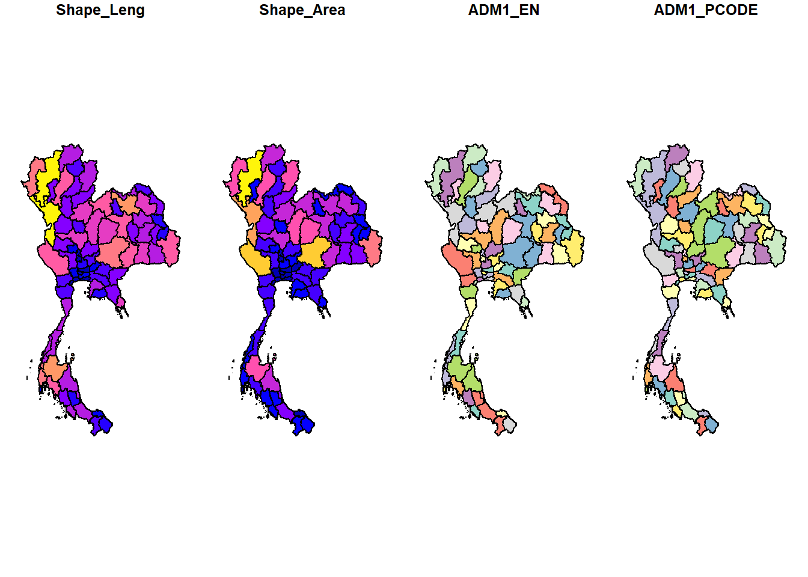
plot(admin_boundaries_filtered)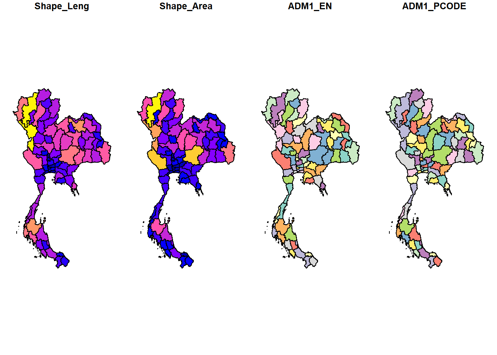
Plotting the Queen Contiguity based neighbour map without Phuket.
plot(admin_boundaries_filtered$geometry, border="lightgrey")
plot(admin_boundaries_q_filtered,coords, pch = 19, add=TRUE, col="red", cex=0.5)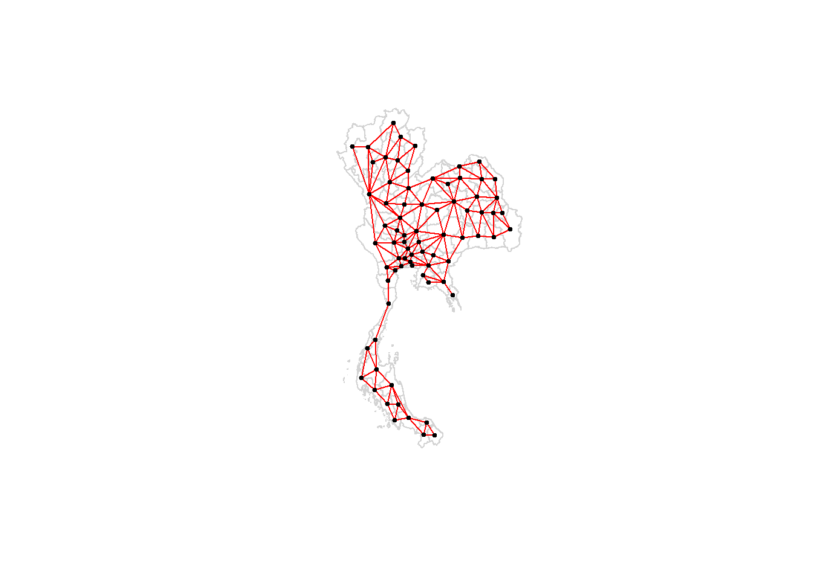
rs_admin_boundaries_q_filtered <- nb2listw(admin_boundaries_q_filtered,
style = "W",
zero.policy = TRUE)
rs_admin_boundaries_q_filteredCharacteristics of weights list object:
Neighbour list object:
Number of regions: 76
Number of nonzero links: 352
Percentage nonzero weights: 6.094183
Average number of links: 4.631579
Weights style: W
Weights constants summary:
n nn S0 S1 S2
W 76 5776 76 36.26113 315.652Merging tourism data with admin_boundaries
This CSV contains the tourism indicators summed over the entire dataset period (i.e. 50 months from Jan 2019 to Feb 2023.
admin_tourism_indicators <- read_csv("data/clean/admin_tourism_indicators.csv")Merge the above dataset with admin_boundaries dataset.
tourism_wide_filtered_pivot <- admin_boundaries_filtered %>%
left_join(admin_tourism_indicators, by = c(ADM1_EN = "province_eng"))Global Measures of Spatial Autocorrelation: Moran’s I
Global Moran’s I test
wm_q <- tourism_wide_filtered_pivot%>%
mutate(nb = st_contiguity(geometry),
wt = st_weights(nb,
style = "W"),
.before = 1)write_rds(wm_q, "data/clean/wm_q.rds")wm_q <- read_rds("data/clean/wm_q.rds")global_moran_test(wm_q$no_tourist_all,
wm_q$nb,
wm_q$wt)
Moran I test under randomisation
data: x
weights: listw
Moran I statistic standard deviate = 0.26682, p-value = 0.3948
alternative hypothesis: greater
sample estimates:
Moran I statistic Expectation Variance
-0.0005524132 -0.0133333333 0.0022944608 global_moran_test(wm_q$revenue_all,
wm_q$nb,
wm_q$wt)
Moran I test under randomisation
data: x
weights: listw
Moran I statistic standard deviate = -0.7029, p-value = 0.7589
alternative hypothesis: greater
sample estimates:
Moran I statistic Expectation Variance
-0.036958473 -0.013333333 0.001129693 Null Hypothesis: There is no spatial autocorrelation in the data, the observed pattern of values is random.
Alternative Hypothesis (H1): There is spatial autocorrelation in the data, the observed pattern of values is not random.
Using a confidence interval of 95%, and a p-value of 0.3948 and 0.7589 for total number of tourists and total revenue per province, we have insufficient evidence to reject the null hypothesis and that the observed pattern of values is random.
The I statistic of both tests is also close to zero, suggesting weak or no spatial association.
Global Moran’I permutation test
set.seed(1234)global_moran_perm(wm_q$no_tourist_all,
wm_q$nb,
wm_q$wt,
nsim=99)
Monte-Carlo simulation of Moran I
data: x
weights: listw
number of simulations + 1: 100
statistic = -0.00055241, observed rank = 59, p-value = 0.82
alternative hypothesis: two.sidedglobal_moran_perm(wm_q$revenue_all,
wm_q$nb,
wm_q$wt,
nsim=99)
Monte-Carlo simulation of Moran I
data: x
weights: listw
number of simulations + 1: 100
statistic = -0.036958, observed rank = 16, p-value = 0.32
alternative hypothesis: two.sidedPerforming the test using a monte-carlo simulation of Moran I did not change the results from our earlier test, we still do not have sufficient evidence to reject the null hypothesis and the observed pattern of values is random.
lisa <- wm_q %>%
mutate(local_moran = local_moran(
no_tourist_all, nb, wt, nsim = 99),
.before = 1) %>%
unnest(local_moran)class(lisa)[1] "sf" "tbl_df" "tbl" "data.frame"Local Moran’s I
tmap_mode("plot")
tm_shape(lisa) +
tm_fill("ii") +
tm_borders(alpha = 0.5) +
tm_view(set.zoom.limits = c(6,8)) +
tm_layout(
main.title = "local Moran's I of G",
main.title.size = 2)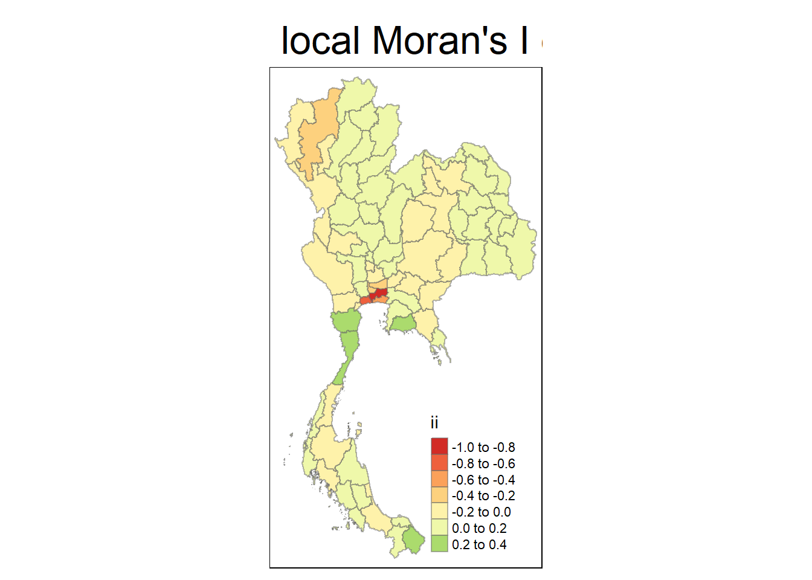
tmap_mode("plot")
map1 <- tm_shape(lisa) +
tm_fill("ii") +
tm_borders(alpha = 0.5) +
tm_view(set.zoom.limits = c(6,8)) +
tm_layout(main.title = "local Moran's I of number of tourists",
main.title.size = 0.8)
map2 <- tm_shape(lisa) +
tm_fill("p_ii",
breaks = c(0, 0.001, 0.01, 0.05, 0.10, 1),
labels = c("0.001", "0.01", "0.05", "0.10", "Not sig")) +
tm_borders(alpha = 0.5) +
tm_layout(main.title = "p-value of local Moran's I",
main.title.size = 0.8)
tmap_arrange(map1, map2, ncol = 2)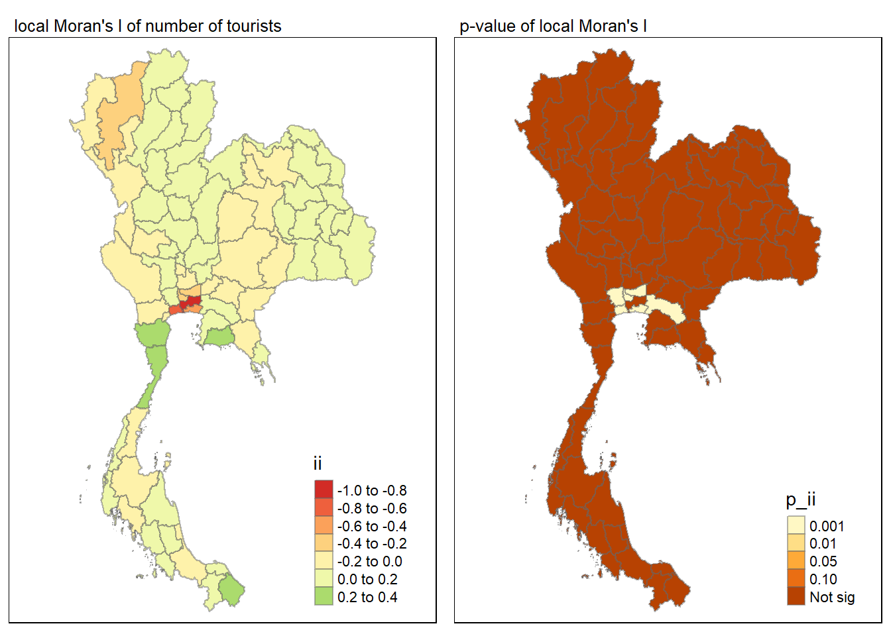
It is noted that there are provinces with a low ii value of near -1.0 with significant p_ii values in the Bangkok Metropolitan Region.
lisa_sig <- lisa %>%
filter(p_ii_sim < 0.05)
tmap_mode("plot")
tm_shape(lisa) +
tm_polygons() +
tm_borders(alpha = 0.5) +
tm_shape(lisa_sig) +
tm_fill("mean") +
tm_borders(alpha = 0.4)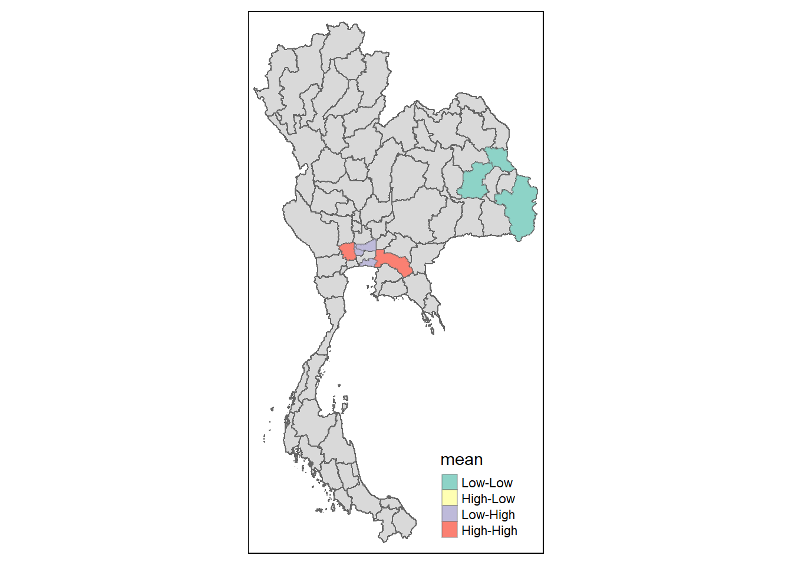
# Find the indices of the 10 rows with the lowest "ii" values
lowest_ii_indices <- order(lisa$ii)[1:10]
# Extract the province names and "ii" values corresponding to the lowest "ii" values
lowest_ii_data <- lisa[lowest_ii_indices, c("ADM1_EN", "ii", "p_ii")] # Print the results
print("The 10 provinces with the lowest 'ii' values:") [1] "The 10 provinces with the lowest 'ii' values:"print(lowest_ii_data)Simple feature collection with 10 features and 3 fields
Geometry type: MULTIPOLYGON
Dimension: XY
Bounding box: xmin: 97.34336 ymin: 13.4252 xmax: 103.0126 ymax: 20.14786
Geodetic CRS: WGS 84
# A tibble: 10 × 4
ADM1_EN ii p_ii geometry
<chr> <dbl> <dbl> <MULTIPOLYGON [°]>
1 Bangkok -0.971 9.27e- 1 (((100.6139 13.95462, 100.6143 13.95442, …
2 Samut Sakhon -0.741 2.94e- 5 (((100.3091 13.7217, 100.3091 13.72169, 1…
3 Samut Prakan -0.423 1.69e-13 (((100.7306 13.71713, 100.7307 13.71681, …
4 Pathum Thani -0.364 8.95e- 4 (((100.8916 14.24576, 100.8916 14.24365, …
5 Nonthaburi -0.250 1.49e- 5 (((100.3415 14.10079, 100.3415 14.10001, …
6 Chiang Mai -0.246 6.09e- 1 (((99.52512 20.1376, 99.52624 20.13757, 9…
7 Kanchanaburi -0.193 7.47e- 1 (((98.58631 15.65465, 98.58662 15.65384, …
8 Mae Hong Son -0.175 3.19e- 1 (((98.0591 19.80385, 98.05993 19.8038, 98…
9 Nakhon Ratchasima -0.0929 7.85e- 1 (((102.3144 15.80708, 102.3147 15.80707, …
10 Chaiyaphum -0.0790 4.07e- 1 (((101.5603 16.72849, 101.5613 16.72794, …Upon further examination of the dataset, it is noted that the provinces in the Bangkok Metropolitan Region, namely Bangkok and Samut Sakhon have a low ii value near -1.0. This indicates that these provinces are spatial outliers or discordant observations.
Using the lisa-mean we have also noted the outlier status of these provinces due to the high-low or low-high relationship with its neighbours.
Hot Spot and Cold Spot Area Analysis
Computing local Gi* statistics
Derive a spatial weight matrix by using sfdep functions and tidyverse approach.
wm_idw <- tourism_wide_filtered_pivot %>%
mutate(nb = include_self(
st_contiguity(geometry)),
wts = st_inverse_distance(nb,
geometry,
scale = 1,
alpha = 1),
.before = 1)write_rds(wm_idw, "data/clean/wm_idw.rds")wm_idw <- read_rds("data/clean/wm_idw.rds")Computing the local Gi* by using the code chunk below.
HCSA <- wm_idw %>%
mutate(local_Gi = local_gstar_perm(
no_tourist_all, nb, wts, nsim=99),
.before = 1) %>%
unnest(local_Gi)
HCSASimple feature collection with 76 features and 24 fields
Geometry type: MULTIPOLYGON
Dimension: XY
Bounding box: xmin: 97.34336 ymin: 5.613038 xmax: 105.637 ymax: 20.46507
Geodetic CRS: WGS 84
# A tibble: 76 × 25
gi_star cluster e_gi var_gi std_dev p_value p_sim p_folded_sim skewness
<dbl> <fct> <dbl> <dbl> <dbl> <dbl> <dbl> <dbl> <dbl>
1 -0.329 High 0.00152 4.79e-7 -0.0583 9.54e- 1 0.92 0.46 1.24
2 7.58 Low 0.000756 3.40e-7 16.9 1.93e-64 0.02 0.01 1.56
3 3.95 Low 0.00153 2.10e-6 3.64 2.71e- 4 0.1 0.05 2.91
4 3.77 Low 0.00176 2.01e-6 3.36 7.69e- 4 0.06 0.03 2.27
5 -0.361 High 0.00187 2.18e-6 -0.333 7.39e- 1 0.96 0.48 3.29
6 0.232 Low 0.00118 7.52e-7 0.448 6.54e- 1 0.36 0.18 3.61
7 -0.0166 High 0.00129 9.39e-7 -0.164 8.70e- 1 0.82 0.41 2.25
8 -0.527 Low 0.00123 9.18e-7 -0.509 6.11e- 1 0.56 0.28 3.39
9 -0.579 Low 0.00108 1.58e-6 -0.495 6.20e- 1 0.54 0.27 2.81
10 0.459 High 0.000915 4.31e-7 0.730 4.66e- 1 0.24 0.12 3.08
# ℹ 66 more rows
# ℹ 16 more variables: kurtosis <dbl>, nb <nb>, wts <list>, Shape_Leng <dbl>,
# Shape_Area <dbl>, ADM1_EN <chr>, ADM1_PCODE <chr>, no_tourist_all <dbl>,
# no_tourist_foreign <dbl>, no_tourist_stay <dbl>, no_tourist_thai <dbl>,
# ratio_tourist_stay <dbl>, revenue_all <dbl>, revenue_foreign <dbl>,
# revenue_thai <dbl>, geometry <MULTIPOLYGON [°]>Plotting the local Gi* at the province level.
tmap_mode("plot")
tm_shape(HCSA) +
tm_fill("gi_star") +
tm_borders(alpha = 0.5) +
tm_view(set.zoom.limits = c(6,8))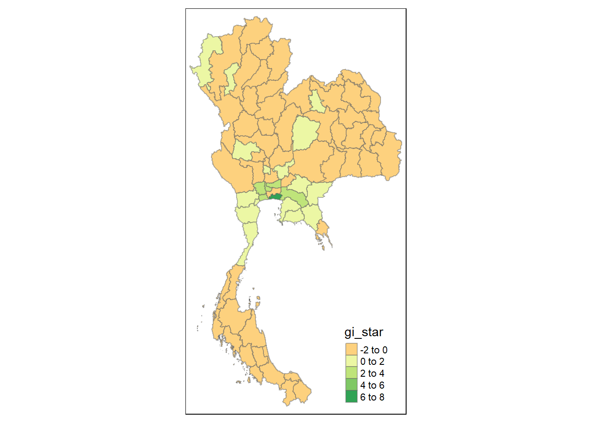
Plotting the p-value of HCSA
tmap_mode("plot")
tm_shape(HCSA) +
tm_fill("p_sim") +
tm_borders(alpha = 0.5)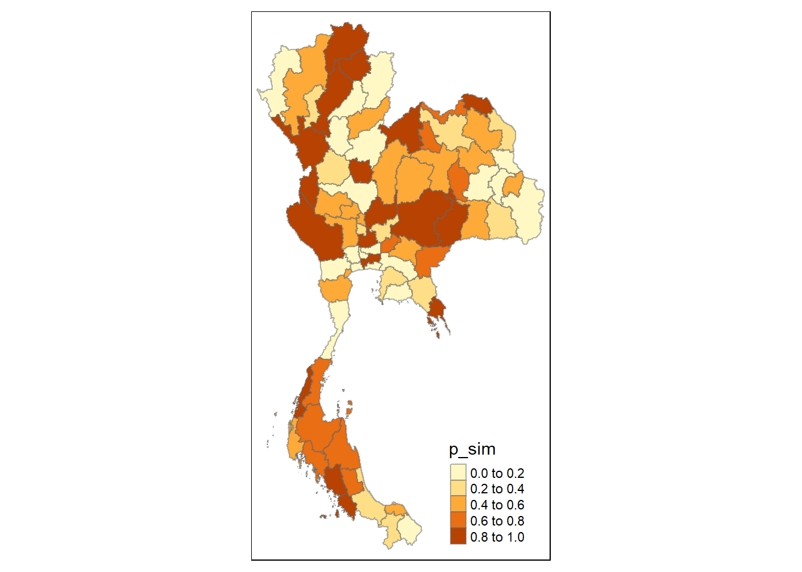
tmap_mode("plot")
map1 <- tm_shape(HCSA) +
tm_fill("gi_star") +
tm_borders(alpha = 0.5) +
tm_view(set.zoom.limits = c(6,8)) +
tm_layout(main.title = "Gi* of total number of visitors",
main.title.size = 0.8)
map2 <- tm_shape(HCSA) +
tm_fill("p_value",
breaks = c(0, 0.001, 0.01, 0.05, 0.10, 1),
labels = c("0.001", "0.01", "0.05", "0.10", "Not sig")) +
tm_borders(alpha = 0.5) +
tm_layout(main.title = "p-value of Gi*",
main.title.size = 0.8)
tmap_arrange(map1, map2, ncol = 2)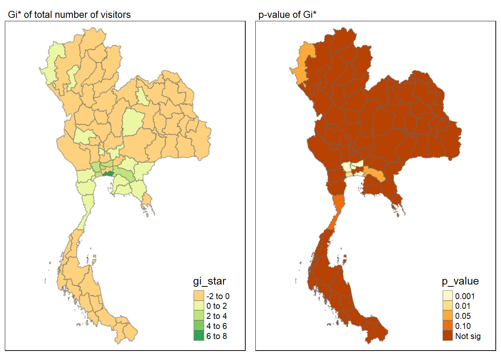
Visualising hot spot and cold spot areas
HCSA_sig <- HCSA %>%
filter(p_sim < 0.05)
tmap_mode("plot")
tm_shape(HCSA) +
tm_polygons() +
tm_borders(alpha = 0.5) +
tm_shape(HCSA_sig) +
tm_fill("cluster") +
tm_borders(alpha = 0.4)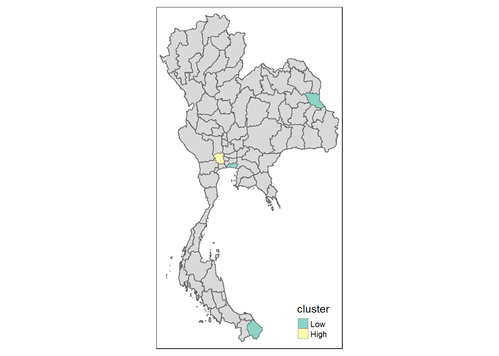
Emerging Hot Spot Analysis - Spatial Temporal Data
Creating a spacetime cube
tourism_wide$date <- as.Date(tourism_wide$date)
tourism_st <- spacetime(tourism_wide,
admin_boundaries,
.loc_col = "ADM1_EN",
.time_col = "year_month")is_spacetime_cube(tourism_st)[1] TRUEno_tourist_nb <- tourism_st %>%
activate("geometry") %>% # use the geometry attributes and ignore the rest
mutate(nb = include_self( #Gi* = include self, if no * dont include self.
st_contiguity(geometry)),
wt = st_inverse_distance(nb, #inverse data weight - for Gi*
geometry,
scale = 1,
alpha = 1),
.before = 1) %>%
set_nbs("nb") %>%
set_wts("wt")gi_stars <- no_tourist_nb %>%
group_by(year) %>%
mutate(gi_star = local_gstar_perm(
no_tourist_all, nb, wt)) %>%
tidyr::unnest(gi_star)cbg <- gi_stars %>%
ungroup() %>%
filter(ADM1_EN == "Bangkok") %>%
select(ADM1_EN, year, gi_star)Plotting the trend of Bangkok province using the Mann-Kendall test, as it was noted to be a spatial outlier in our earlier analysis.
ggplot(data = cbg,
aes(x=year,
y= gi_star)) +
geom_line() +
theme_light()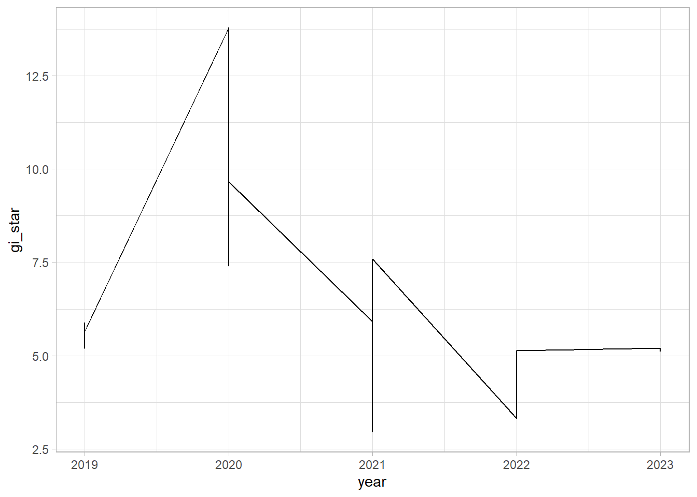
It was noted that the gi_star was the highest in 2020, with a sharp decline after. The decline was likely due to covid, and the area has yet to seen an increase post covid in 2023.
cbg %>%
summarise (mk = list(
unclass(
Kendall::MannKendall(gi_star)))) %>%
tidyr::unnest_wider(mk)# A tibble: 1 × 6
tau sl S D varS geometry
<dbl> <dbl> <dbl> <dbl> <dbl> <POLYGON [°]>
1 -0.234 0.0167 -287 1225 14292. ((100.6128 13.9552, 100.6119 13.95518, 100.6…Mann-Kendall test data.frame
ehsa <- gi_stars %>%
group_by(ADM1_EN) %>%
summarise(mk = list (
unclass(
Kendall::MannKendall(gi_star)))) %>%
tidyr::unnest_wider(mk)
head(ehsa)write_rds(ehsa, "data/clean/ehsa.rds")ehsa <- read_rds("data/clean/ehsa.rds")set.seed(1234)
ehsa <- emerging_hotspot_analysis(
x = tourism_st,
.var = "no_tourist_all",
k = 1,
nsim = 99
)head(ehsa)Significant emerging hot/cold spots
emerging <- ehsa %>%
arrange(sl, abs(tau)) %>%
slice(1:10)
head(emerging)Performing Emerging Hotspot Analysis
ehsa <- emerging_hotspot_analysis(
x = tourism_st,
.var = "no_tourist_all",
k = 1,
nsim = 99
)write_rds(ehsa, "data/clean/ehsa2.rds")ehsa2 <- read_rds("data/clean/ehsa2.rds")ehsa_df <- as.data.frame(ehsa2)Visualising the distribution of EHSA classes
ggplot(data = ehsa_df,
aes(x = classification)) +
geom_bar()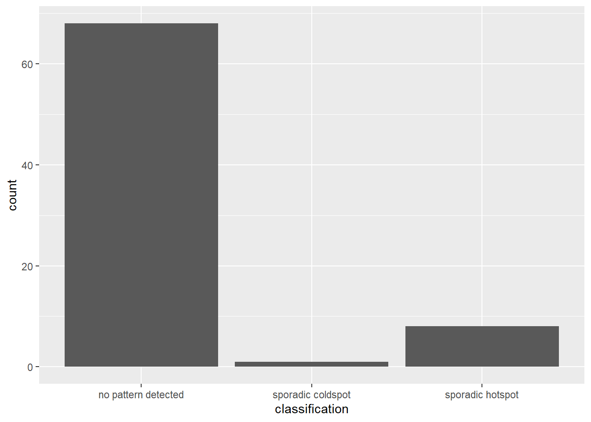
sporadic_hotspot_df <- ehsa_df %>%
filter(classification =="sporadic hotspot")
sporadic_hotspot_df location tau p_value classification
1 Nonthaburi -0.14775510 0.1321508 sporadic hotspot
2 Ang Thong -0.11673469 0.2349083 sporadic hotspot
3 Bueng Kan 0.12000000 0.2219840 sporadic hotspot
4 Sakon Nakhon -0.08244898 0.4028817 sporadic hotspot
5 Nakhon Phanom -0.01387755 0.8935309 sporadic hotspot
6 Nakhon Sawan -0.12816326 0.1919208 sporadic hotspot
7 Kanchanaburi -0.12816326 0.1919208 sporadic hotspot
8 Suphan Buri -0.12163265 0.2157165 sporadic hotspotAlthough there were 8 locations classified as sporadic hotspots, their p-values were above 0.05, hence statistically not significant.
Visualising EHSA
tourism_ehsa <- tourism_wide_filtered_pivot %>%
left_join(ehsa_df,
by = join_by(ADM1_EN == location))ehsa_sig <- tourism_ehsa %>%
filter(p_value < 0.05)
tmap_mode("plot")
tm_shape(tourism_ehsa) +
tm_polygons() +
tm_borders(alpha = 0.5) +
tm_shape(ehsa_sig) +
tm_fill("classification") +
tm_borders(alpha = 0.4)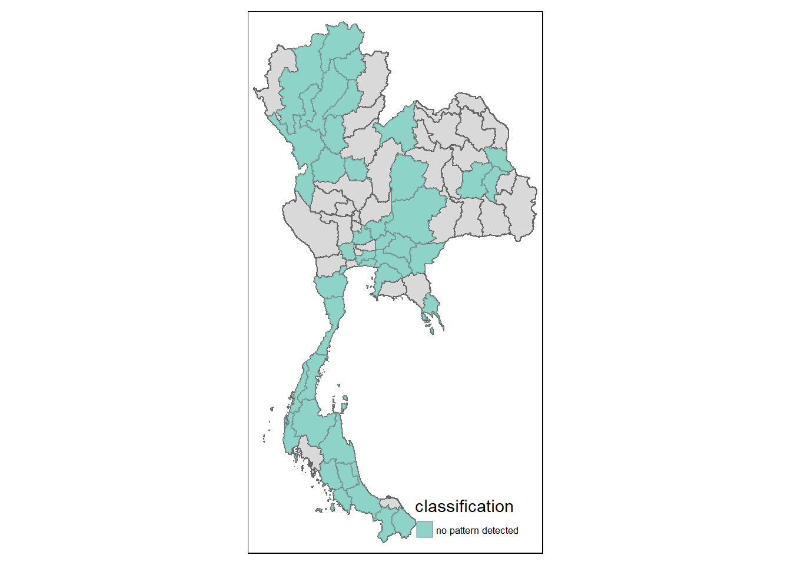
To further visualize the results, only classifications with no patterns detected were statistically significant at a confidence level of 95%.